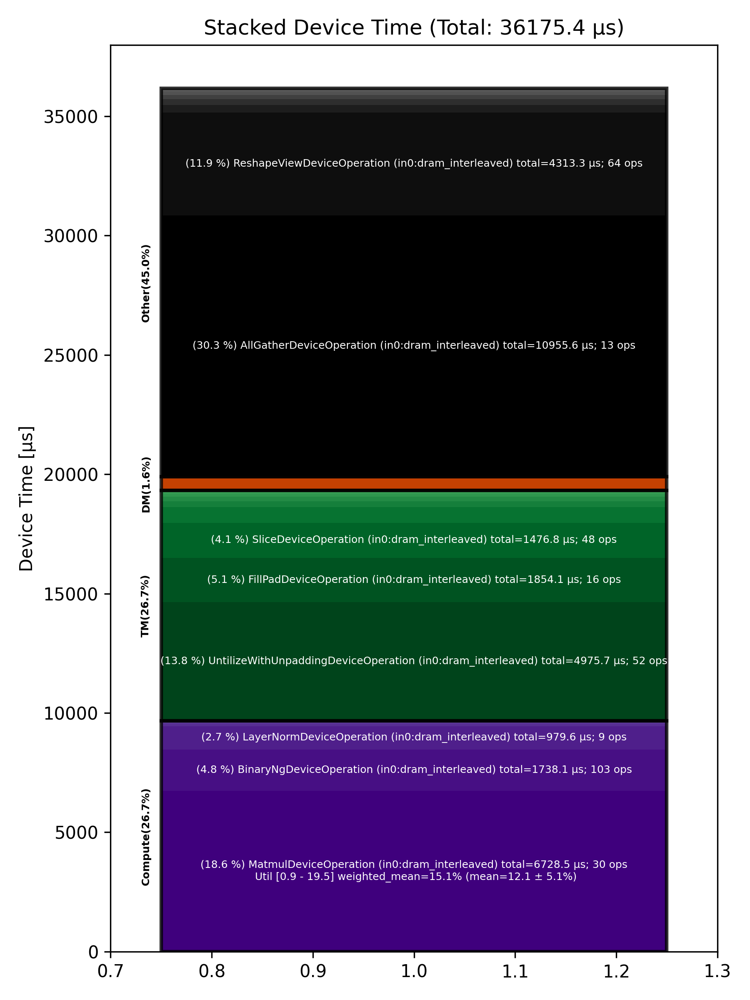

🚀 Performance Report 🚀 ======================== ID Total % Bound OP Code Device Device Time Op-to-Op Gap Cores DRAM DRAM % FLOPs FLOPs % Math Fidelity ------------------------------------------------------------------------------------------------------------------------------------------------------------------------------ 22 0.0 % TilizeWithValPaddingDeviceOperation 15 7 μs 1 INT32 => INT32 38 0.0 % TypecastDeviceOperation 3 2 μs 573 μs 1 INT32 => UINT32 80 0.0 % ReshapeViewDeviceOperation 5 4 μs 160 μs 1 UINT32 => UINT32 128 0.0 % UntilizeWithUnpaddingDeviceOperation 9 2 μs 409 μs 1 UINT32 => UINT32 132 0.0 % EmbeddingsDeviceOperation 26 4 μs 288 μs 16 UINT32, BF16 => BF16 172 0.0 % TilizeWithValPaddingDeviceOperation 30 12 μs 305 μs 45 BF16 => BF16 195 0.0 % LayerNormDeviceOperation 25 109 μs 317 μs 1 BF16, BF16 => BF16 255 0.0 % SLOW MatmulDeviceOperation 32 x 2880 x 512 27 42 μs 616 μs 16 40 GB/s 14.0 % 2.2 TFLOPs 6.8 % HiFi2 BF16 x BFP8 => BF16 272 0.0 % ReshapeViewDeviceOperation 5 13 μs 118 μs 72 BF16 => BF16 296 0.0 % SliceDeviceOperation 1 5 μs 163 μs 72 BF16 => BF16 350 0.0 % TilizeWithValPaddingDeviceOperation 11 7 μs 259 μs 1 INT32 => INT32 380 0.0 % TypecastDeviceOperation 18 2 μs 267 μs 1 INT32 => FP32 408 0.0 % SLOW MatmulDeviceOperation 32 x 32 x 32 5 7 μs 682 μs 1 2 GB/s 0.6 % 0.0 TFLOPs 0.9 % HiFi4 FP32 x FP32 => FP32 421 0.0 % UnaryDeviceOperation 27 3 μs 122 μs 1 FP32 => FP32 475 0.0 % ReshapeViewDeviceOperation 17 6 μs 274 μs 1 FP32 => FP32 483 0.0 % BinaryNgDeviceOperation 25 8 μs 348 μs 72 FP32, FP32 => FP32 527 0.0 % TypecastDeviceOperation 6 2 μs 224 μs 1 FP32 => BF16 565 0.0 % BinaryNgDeviceOperation 23 16 μs 345 μs 72 BF16, BF16 => BF16 581 0.0 % SliceDeviceOperation 27 5 μs 315 μs 72 BF16 => BF16 628 0.0 % UnaryDeviceOperation 22 3 μs 99 μs 1 FP32 => FP32 656 0.0 % ReshapeViewDeviceOperation 5 6 μs 227 μs 1 FP32 => FP32 679 0.0 % BinaryNgDeviceOperation 2 8 μs 305 μs 72 FP32, FP32 => FP32 716 0.0 % TypecastDeviceOperation 30 2 μs 79 μs 1 FP32 => BF16 751 0.0 % BinaryNgDeviceOperation 6 15 μs 232 μs 72 BF16, BF16 => BF16 794 0.0 % BinaryNgDeviceOperation 16 7 μs 260 μs 72 BF16, BF16 => BF16 810 0.0 % BinaryNgDeviceOperation 28 16 μs 122 μs 72 BF16, BF16 => BF16 835 0.0 % BinaryNgDeviceOperation 25 15 μs 123 μs 72 BF16, BF16 => BF16 866 0.0 % BinaryNgDeviceOperation 24 7 μs 294 μs 72 BF16, BF16 => BF16 918 0.0 % ConcatDeviceOperation 15 7 μs 267 μs 72 BF16, BF16 => BF16 937 0.4 % SLOW MatmulDeviceOperation 32 x 2880 x 64 30 30 μs 10,469 μs 2 12 GB/s 4.3 % 0.4 TFLOPs 9.6 % HiFi2 BF16 x BFP8 => BF16 962 0.0 % ReshapeViewDeviceOperation 24 4 μs 143 μs 32 BF16 => BF16 1013 0.0 % SliceDeviceOperation 23 2 μs 192 μs 16 BF16 => BF16 1045 0.0 % PermuteDeviceOperation 23 4 μs 251 μs 16 BF16 => BF16 1081 0.0 % BinaryNgDeviceOperation 12 5 μs 114 μs 72 BF16, BF16 => BF16 1105 0.0 % SliceDeviceOperation 4 2 μs 176 μs 16 BF16 => BF16 1145 0.0 % PermuteDeviceOperation 12 4 μs 316 μs 16 BF16 => BF16 1170 0.0 % BinaryNgDeviceOperation 20 5 μs 87 μs 72 BF16, BF16 => BF16 1207 0.0 % BinaryNgDeviceOperation 14 3 μs 236 μs 72 BF16, BF16 => BF16 1238 0.0 % BinaryNgDeviceOperation 15 5 μs 269 μs 72 BF16, BF16 => BF16 1269 0.0 % BinaryNgDeviceOperation 23 5 μs 91 μs 72 BF16, BF16 => BF16 1311 0.0 % BinaryNgDeviceOperation 10 3 μs 273 μs 72 BF16, BF16 => BF16 1328 94.3 % ConcatDeviceOperation 5 2 μs 2,459,987 μs 32 BF16, BF16 => BF16 1361 0.0 % RepeatDeviceOperation 4 2 μs 301 μs 72 INT32 => INT32 1401 0.0 % InterleavedToShardedDeviceOperation 12 1 μs 567 μs 16 BF16 => BF16 1422 0.0 % PagedUpdateCacheDeviceOperation 7 4 μs 126 μs 16 BF16, BF16 => BF16 1447 0.0 % TilizeWithValPaddingDeviceOperation 2 7 μs 334 μs 1 INT32 => INT32 1496 0.0 % BinaryNgDeviceOperation 13 3 μs 337 μs 72 INT32, INT32 => INT32 1531 0.0 % BinaryNgDeviceOperation 17 10 μs 325 μs 72 INT32, INT32 => BF16 1544 0.0 % TilizeWithValPaddingDeviceOperation 1 4 μs 264 μs 1 BF16 => BF16 1576 0.0 % BinaryNgDeviceOperation 1 6 μs 337 μs 72 BF16, BF16 => BF16 1624 0.0 % TilizeWithValPaddingDeviceOperation 13 7 μs 301 μs 1 INT32 => INT32 1664 0.0 % BinaryNgDeviceOperation 9 10 μs 243 μs 72 INT32, INT32 => BF16 1696 0.0 % BinaryNgDeviceOperation 9 4 μs 261 μs 72 BF16, BF16 => BF16 1714 0.0 % TernaryDeviceOperation 20 25 μs 269 μs 72 BF16, BF16 => BF16 1746 0.0 % SLOW MatmulDeviceOperation 32 x 2880 x 64 15 30 μs 1,069 μs 2 12 GB/s 4.3 % 0.4 TFLOPs 9.6 % HiFi2 BF16 x BFP8 => BF16 1787 0.0 % ReshapeViewDeviceOperation 17 4 μs 122 μs 32 BF16 => BF16 1797 0.0 % PermuteDeviceOperation 27 4 μs 177 μs 32 BF16 => BF16 1851 0.0 % InterleavedToShardedDeviceOperation 17 1 μs 271 μs 16 BF16 => BF16 1881 0.0 % PagedUpdateCacheDeviceOperation 12 4 μs 214 μs 16 BF16, BF16 => BF16 1897 0.0 % PermuteDeviceOperation 0 7 μs 106 μs 72 BF16 => BF16 1945 0.0 % UntilizeWithUnpaddingDeviceOperation 12 3 μs 170 μs 1 BF16 => BF16 1985 0.0 % RepeatDeviceOperation 8 2 μs 249 μs 72 BF16 => BF16 2013 0.0 % TilizeWithValPaddingDeviceOperation 19 10 μs 258 μs 1 BF16 => BF16 2049 0.0 % SdpaDecodeDeviceOperation 8 16 μs 222 μs 72 BF16, BF16 => BF16 2072 0.0 % PermuteDeviceOperation 13 22 μs 110 μs 72 BF16 => BF16 2106 0.0 % ReshapeViewDeviceOperation 16 13 μs 244 μs 16 BF16 => BF16 2118 0.0 % SLOW MatmulDeviceOperation 32 x 512 x 2880 14 15 μs 422 μs 45 112 GB/s 39.0 % 6.3 TFLOPs 13.5 % HiFi4 BF16 x BFP8 => BF16 2161 0.0 % AllGatherDeviceOperation 0 78 μs 500 μs 24 BF16 => BF16 2204 0.0 % FillPadDeviceOperation 18 155 μs 60 μs 8 BF16 => BF16 2227 0.0 % FastReduceNCDeviceOperation 21 9 μs 180 μs 72 BF16 => BF16 2270 0.0 % SliceDeviceOperation 11 3 μs 102 μs 72 BF16 => BF16 2293 0.0 % BinaryNgDeviceOperation 23 5 μs 287 μs 72 BF16, BF16 => BF16 2333 0.0 % BinaryNgDeviceOperation 19 5 μs 242 μs 72 BF16, BF16 => BF16 2355 0.0 % ReshapeViewDeviceOperation 21 45 μs 247 μs 72 BF16 => BF16 2399 0.0 % LayerNormDeviceOperation 10 109 μs 183 μs 16 BF16, BF16 => BF16 2430 0.0 % ReshapeViewDeviceOperation 11 29 μs 162 μs 72 BF16 => BF16 2440 0.0 % UntilizeWithUnpaddingDeviceOperation 1 9 μs 223 μs 45 BF16 => BF16 2490 0.0 % RepeatDeviceOperation 16 9 μs 241 μs 72 BF16 => BF16 2504 0.0 % TilizeWithValPaddingDeviceOperation 1 39 μs 104 μs 45 BF16 => BF16 2546 0.0 % DRAM MatmulDeviceOperation 32 x 2880 x 5760 15 359 μs 495 μs 60 191 GB/s 66.4 % 11.8 TFLOPs 19.2 % HiFi4 BF16 x BFP8 => BF16 2582 0.0 % BinaryNgDeviceOperation 15 22 μs 1 μs 72 BF16, BF16 => BF16 2606 0.0 % UntilizeWithUnpaddingDeviceOperation 7 32 μs 1 μs 60 BF16 => BF16 2653 0.0 % SliceDeviceOperation 19 155 μs 162 μs 64 BF16 => BF16 2677 0.0 % TilizeWithValPaddingDeviceOperation 23 39 μs 77 μs 45 BF16 => BF16 2697 0.0 % UnaryDeviceOperation 0 8 μs 60 μs 72 BF16 => BF16 2727 0.0 % BinaryNgDeviceOperation 2 15 μs 181 μs 72 BF16, BF16 => BF16 2763 0.0 % UntilizeWithUnpaddingDeviceOperation 29 32 μs 242 μs 60 BF16 => BF16 2794 0.0 % SliceDeviceOperation 28 155 μs 224 μs 64 BF16 => BF16 2837 0.0 % TilizeWithValPaddingDeviceOperation 23 38 μs 1 μs 45 BF16 => BF16 2864 0.0 % UnaryDeviceOperation 5 8 μs 74 μs 72 BF16 => BF16 2897 0.0 % BinaryNgDeviceOperation 4 17 μs 279 μs 72 BF16, BF16 => BF16 2915 0.0 % UnaryDeviceOperation 25 11 μs 245 μs 72 BF16 => BF16 2962 0.0 % BinaryNgDeviceOperation 20 12 μs 264 μs 72 BF16, BF16 => BF16 2986 0.0 % BinaryNgDeviceOperation 28 12 μs 249 μs 72 BF16, BF16 => BF16 3031 0.0 % SLOW MatmulDeviceOperation 32 x 2880 x 2880 31 236 μs 613 μs 45 147 GB/s 51.1 % 9.0 TFLOPs 19.5 % HiFi4 BF16 x BFP8 => BF16 3051 0.0 % BinaryNgDeviceOperation 29 11 μs 1 μs 72 BF16, BF16 => BF16 3084 0.0 % ReshapeViewDeviceOperation 30 159 μs 95 μs 72 BF16 => BF16 3136 0.0 % TypecastDeviceOperation 9 57 μs 195 μs 72 BF16 => FP32 3164 0.0 % ReshapeViewDeviceOperation 18 47 μs 200 μs 72 FP32 => FP32 3201 0.0 % SLOW MatmulDeviceOperation 32 x 2880 x 32 11 33 μs 454 μs 1 14 GB/s 4.9 % 0.2 TFLOPs 8.8 % HiFi2 FP32 x BFP8 => FP32 3217 0.0 % TypecastDeviceOperation 4 2 μs 108 μs 1 FP32 => BF16 3248 0.0 % FillPadDeviceOperation 5 3 μs 157 μs 1 BF16 => BF16 3296 0.0 % PadDeviceOperation 9 35 μs 262 μs 2 BF16 => BF16 3309 0.0 % FillPadDeviceOperation 31 5 μs 57 μs 1 BF16 => BF16 3347 0.0 % TopKDeviceOperation 21 44 μs 161 μs 1 BF16 => BF16 3369 0.0 % SliceDeviceOperation 0 1 μs 216 μs 1 BF16 => BF16 3396 0.0 % SliceDeviceOperation 26 1 μs 255 μs 1 UINT16 => UINT16 3431 0.0 % TypecastDeviceOperation 2 2 μs 260 μs 1 UINT16 => INT32 3488 0.0 % ReshapeViewDeviceOperation 9 5 μs 256 μs 16 INT32 => INT32 3494 0.0 % UntilizeWithUnpaddingDeviceOperation 3 3 μs 273 μs 16 INT32 => INT32 3540 0.0 % UntilizeWithUnpaddingDeviceOperation 22 3 μs 227 μs 16 INT32 => INT32 3565 0.0 % PermuteDeviceOperation 31 3 μs 83 μs 16 INT32 => INT32 3599 0.0 % PermuteDeviceOperation 6 3 μs 169 μs 16 INT32 => INT32 3624 0.0 % ConcatDeviceOperation 1 2 μs 95 μs 32 INT32, INT32 => INT32 3666 0.0 % PermuteDeviceOperation 20 3 μs 160 μs 16 INT32 => INT32 3696 0.0 % TilizeWithValPaddingDeviceOperation 5 7 μs 89 μs 16 INT32 => INT32 3715 0.0 % SoftmaxDeviceOperation 25 24 μs 197 μs 72 BF16 => BF16 3761 0.0 % AllGatherDeviceOperation 0 61 μs 651 μs 24 INT32 => INT32 3778 0.0 % AllBroadcastDeviceOperation 8 50 μs 279 μs 4 BF16 => BF16 3825 0.0 % UntilizeWithUnpaddingDeviceOperation 4 7 μs 124 μs 1 BF16 => BF16 3865 0.0 % UntilizeWithUnpaddingDeviceOperation 12 7 μs 204 μs 1 BF16 => BF16 3883 0.0 % UntilizeWithUnpaddingDeviceOperation 29 7 μs 71 μs 1 BF16 => BF16 3916 0.0 % UntilizeWithUnpaddingDeviceOperation 30 7 μs 167 μs 1 BF16 => BF16 3968 0.0 % ConcatDeviceOperation 9 2 μs 84 μs 64 BF16, BF16 => BF16 3972 0.0 % TilizeWithValPaddingDeviceOperation 26 5 μs 216 μs 2 BF16 => BF16 4030 0.0 % ReshapeViewDeviceOperation 11 10 μs 274 μs 8 INT32 => INT32 4049 0.0 % SliceDeviceOperation 4 2 μs 319 μs 8 INT32 => INT32 4078 0.0 % UntilizeWithUnpaddingDeviceOperation 7 14 μs 264 μs 8 INT32 => INT32 4124 0.0 % SliceDeviceOperation 18 4 μs 264 μs 72 INT32 => INT32 4137 0.0 % TilizeWithValPaddingDeviceOperation 0 8 μs 226 μs 8 INT32 => INT32 4175 0.0 % BinaryNgDeviceOperation 6 11 μs 124 μs 72 INT32, INT32 => INT32 4199 0.0 % BinaryNgDeviceOperation 2 3 μs 152 μs 72 INT32, INT32 => INT32 4243 0.0 % ReshapeViewDeviceOperation 21 7 μs 254 μs 8 INT32 => INT32 4283 0.0 % ReshapeViewDeviceOperation 17 3 μs 233 μs 8 BF16 => BF16 4300 0.0 % UntilizeWithUnpaddingDeviceOperation 30 7 μs 250 μs 1 INT32 => INT32 4348 0.0 % UntilizeWithUnpaddingDeviceOperation 18 6 μs 93 μs 1 BF16 => BF16 4375 0.0 % ScatterDeviceOperation 14 60 μs 172 μs 1 BF16, INT32 => BF16 4410 0.0 % TilizeWithValPaddingDeviceOperation 16 5 μs 227 μs 64 BF16 => BF16 4430 0.0 % ReshapeViewDeviceOperation 7 23 μs 291 μs 2 BF16 => BF16 4450 0.0 % UntilizeDeviceOperation 24 4 μs 250 μs 2 BF16 => BF16 4503 0.0 % MeshPartitionDeviceOperation 31 2 μs 732 μs 16 BF16 => BF16 4544 0.0 % MeshPartitionDeviceOperation 19 2 μs 515 μs 16 BF16 => BF16 4557 0.0 % TilizeWithValPaddingDeviceOperation 31 4 μs 132 μs 1 BF16 => BF16 4591 0.0 % TransposeDeviceOperation 6 2 μs 171 μs 72 BF16 => BF16 4611 0.0 % ReshapeViewDeviceOperation 25 8 μs 263 μs 64 BF16 => BF16 4667 0.0 % BinaryNgDeviceOperation 17 130 μs 255 μs 72 BF16, BF16 => BF16 4694 0.0 % FillPadDeviceOperation 15 301 μs 129 μs 64 BF16 => BF16 4706 0.0 % FastReduceNCDeviceOperation 24 67 μs 1 μs 72 BF16 => BF16 4742 0.0 % SliceDeviceOperation 3 34 μs 144 μs 72 BF16 => BF16 4785 0.0 % ReduceScatterDeviceOperation 0 145 μs 656 μs 24 BF16 => BF16 4817 0.0 % AllGatherDeviceOperation 0 123 μs 373 μs 40 BF16 => BF16 4836 0.0 % BinaryNgDeviceOperation 26 49 μs 2 μs 72 BF16, BF16 => BF16 4895 0.0 % ReshapeViewDeviceOperation 10 29 μs 141 μs 72 BF16 => BF16 4902 0.0 % LayerNormDeviceOperation 3 108 μs 235 μs 1 BF16, BF16 => BF16 4950 0.0 % SLOW MatmulDeviceOperation 32 x 2880 x 512 24 42 μs 592 μs 16 40 GB/s 14.0 % 2.3 TFLOPs 6.8 % HiFi2 BF16 x BFP8 => BF16 4979 0.0 % ReshapeViewDeviceOperation 21 13 μs 102 μs 72 BF16 => BF16 5017 0.0 % SliceDeviceOperation 12 5 μs 148 μs 72 BF16 => BF16 5028 0.0 % BinaryNgDeviceOperation 26 16 μs 258 μs 72 BF16, BF16 => BF16 5088 0.0 % SliceDeviceOperation 9 5 μs 217 μs 72 BF16 => BF16 5119 0.0 % BinaryNgDeviceOperation 10 15 μs 106 μs 72 BF16, BF16 => BF16 5135 0.0 % BinaryNgDeviceOperation 6 7 μs 151 μs 72 BF16, BF16 => BF16 5173 0.0 % BinaryNgDeviceOperation 23 16 μs 251 μs 72 BF16, BF16 => BF16 5187 0.0 % BinaryNgDeviceOperation 25 15 μs 231 μs 72 BF16, BF16 => BF16 5224 0.0 % BinaryNgDeviceOperation 1 7 μs 86 μs 72 BF16, BF16 => BF16 5252 0.0 % ConcatDeviceOperation 26 8 μs 169 μs 72 BF16, BF16 => BF16 5310 0.0 % SLOW MatmulDeviceOperation 32 x 2880 x 64 17 30 μs 514 μs 2 12 GB/s 4.3 % 0.4 TFLOPs 9.6 % HiFi2 BF16 x BFP8 => BF16 5329 0.0 % ReshapeViewDeviceOperation 4 3 μs 93 μs 32 BF16 => BF16 5348 0.0 % SliceDeviceOperation 26 2 μs 178 μs 16 BF16 => BF16 5404 0.0 % PermuteDeviceOperation 18 4 μs 256 μs 16 BF16 => BF16 5416 0.0 % BinaryNgDeviceOperation 1 5 μs 255 μs 72 BF16, BF16 => BF16 5458 0.0 % SliceDeviceOperation 20 2 μs 244 μs 16 BF16 => BF16 5496 0.0 % PermuteDeviceOperation 13 4 μs 246 μs 16 BF16 => BF16 5536 0.0 % BinaryNgDeviceOperation 9 5 μs 95 μs 72 BF16, BF16 => BF16 5569 0.0 % BinaryNgDeviceOperation 8 3 μs 168 μs 72 BF16, BF16 => BF16 5599 0.0 % BinaryNgDeviceOperation 10 5 μs 102 μs 72 BF16, BF16 => BF16 5611 0.0 % BinaryNgDeviceOperation 29 5 μs 154 μs 72 BF16, BF16 => BF16 5635 0.0 % BinaryNgDeviceOperation 25 3 μs 103 μs 72 BF16, BF16 => BF16 5667 0.0 % ConcatDeviceOperation 25 2 μs 162 μs 32 BF16, BF16 => BF16 5717 0.0 % InterleavedToShardedDeviceOperation 23 1 μs 266 μs 16 BF16 => BF16 5752 0.0 % PagedUpdateCacheDeviceOperation 13 4 μs 238 μs 16 BF16, BF16 => BF16 5788 0.0 % TernaryDeviceOperation 18 25 μs 122 μs 72 BF16, BF16 => BF16 5812 0.0 % SLOW MatmulDeviceOperation 32 x 2880 x 64 12 30 μs 357 μs 2 12 GB/s 4.3 % 0.4 TFLOPs 9.6 % HiFi2 BF16 x BFP8 => BF16 5854 0.0 % ReshapeViewDeviceOperation 11 3 μs 113 μs 32 BF16 => BF16 5859 0.0 % PermuteDeviceOperation 25 4 μs 94 μs 32 BF16 => BF16 5916 0.0 % InterleavedToShardedDeviceOperation 18 1 μs 175 μs 16 BF16 => BF16 5936 0.0 % PagedUpdateCacheDeviceOperation 5 4 μs 241 μs 16 BF16, BF16 => BF16 5983 0.0 % PermuteDeviceOperation 10 8 μs 95 μs 72 BF16 => BF16 6003 0.0 % UntilizeWithUnpaddingDeviceOperation 21 3 μs 175 μs 1 BF16 => BF16 6041 0.0 % RepeatDeviceOperation 12 2 μs 87 μs 72 BF16 => BF16 6069 0.0 % TilizeWithValPaddingDeviceOperation 23 10 μs 168 μs 1 BF16 => BF16 6112 0.0 % SdpaDecodeDeviceOperation 9 16 μs 190 μs 72 BF16, BF16 => BF16 6136 0.0 % PermuteDeviceOperation 13 22 μs 136 μs 72 BF16 => BF16 6164 0.0 % ReshapeViewDeviceOperation 22 14 μs 228 μs 16 BF16 => BF16 6198 0.0 % SLOW MatmulDeviceOperation 32 x 512 x 2880 24 15 μs 388 μs 45 112 GB/s 38.9 % 6.3 TFLOPs 13.5 % HiFi4 BF16 x BFP8 => BF16 6225 0.0 % AllGatherDeviceOperation 0 66 μs 352 μs 24 BF16 => BF16 6266 0.0 % FillPadDeviceOperation 16 155 μs 28 μs 8 BF16 => BF16 6301 0.0 % FastReduceNCDeviceOperation 19 10 μs 38 μs 72 BF16 => BF16 6333 0.0 % SliceDeviceOperation 19 3 μs 80 μs 72 BF16 => BF16 6344 0.0 % BinaryNgDeviceOperation 1 5 μs 195 μs 72 BF16, BF16 => BF16 6401 0.0 % ReshapeViewDeviceOperation 8 45 μs 240 μs 72 BF16 => BF16 6429 0.0 % BinaryNgDeviceOperation 19 48 μs 207 μs 72 BF16, BF16 => BF16 6440 0.0 % LayerNormDeviceOperation 1 110 μs 218 μs 16 BF16, BF16 => BF16 6469 0.0 % ReshapeViewDeviceOperation 27 29 μs 136 μs 72 BF16 => BF16 6509 0.0 % UntilizeWithUnpaddingDeviceOperation 31 9 μs 61 μs 45 BF16 => BF16 6537 0.0 % RepeatDeviceOperation 0 9 μs 159 μs 72 BF16 => BF16 6583 0.0 % TilizeWithValPaddingDeviceOperation 14 39 μs 85 μs 45 BF16 => BF16 6610 0.0 % DRAM MatmulDeviceOperation 32 x 2880 x 5760 15 359 μs 442 μs 60 191 GB/s 66.3 % 11.8 TFLOPs 19.2 % HiFi4 BF16 x BFP8 => BF16 6631 0.0 % BinaryNgDeviceOperation 2 21 μs 1 μs 72 BF16, BF16 => BF16 6679 0.0 % UntilizeWithUnpaddingDeviceOperation 14 32 μs 1 μs 60 BF16 => BF16 6692 0.0 % SliceDeviceOperation 26 155 μs 179 μs 64 BF16 => BF16 6732 0.0 % TilizeWithValPaddingDeviceOperation 30 39 μs 98 μs 45 BF16 => BF16 6765 0.0 % UnaryDeviceOperation 31 9 μs 57 μs 72 BF16 => BF16 6799 0.0 % BinaryNgDeviceOperation 6 15 μs 286 μs 72 BF16, BF16 => BF16 6824 0.0 % UntilizeWithUnpaddingDeviceOperation 1 32 μs 235 μs 60 BF16 => BF16 6871 0.0 % SliceDeviceOperation 14 155 μs 209 μs 64 BF16 => BF16 6902 0.0 % TilizeWithValPaddingDeviceOperation 15 38 μs 1 μs 45 BF16 => BF16 6930 0.0 % UnaryDeviceOperation 20 8 μs 68 μs 72 BF16 => BF16 6962 0.0 % BinaryNgDeviceOperation 20 17 μs 101 μs 72 BF16, BF16 => BF16 6994 0.0 % UnaryDeviceOperation 20 11 μs 134 μs 72 BF16 => BF16 7037 0.0 % BinaryNgDeviceOperation 19 12 μs 98 μs 72 BF16, BF16 => BF16 7073 0.0 % BinaryNgDeviceOperation 8 12 μs 148 μs 72 BF16, BF16 => BF16 7080 0.0 % SLOW MatmulDeviceOperation 32 x 2880 x 2880 1 235 μs 548 μs 45 148 GB/s 51.2 % 9.0 TFLOPs 19.5 % HiFi4 BF16 x BFP8 => BF16 7116 0.0 % BinaryNgDeviceOperation 30 11 μs 1 μs 72 BF16, BF16 => BF16 7155 0.0 % ReshapeViewDeviceOperation 21 159 μs 59 μs 72 BF16 => BF16 7176 0.0 % TypecastDeviceOperation 1 57 μs 1 μs 72 BF16 => FP32 7216 0.0 % ReshapeViewDeviceOperation 5 48 μs 54 μs 72 FP32 => FP32 7265 0.0 % SLOW MatmulDeviceOperation 32 x 2880 x 32 11 33 μs 254 μs 1 14 GB/s 4.9 % 0.2 TFLOPs 8.7 % HiFi2 FP32 x BFP8 => FP32 7292 0.0 % TypecastDeviceOperation 18 2 μs 121 μs 1 FP32 => BF16 7319 0.0 % FillPadDeviceOperation 14 3 μs 178 μs 1 BF16 => BF16 7338 0.0 % PadDeviceOperation 28 35 μs 245 μs 2 BF16 => BF16 7381 0.0 % FillPadDeviceOperation 23 5 μs 43 μs 1 BF16 => BF16 7419 0.0 % TopKDeviceOperation 17 44 μs 182 μs 1 BF16 => BF16 7438 0.0 % SliceDeviceOperation 7 1 μs 43 μs 1 BF16 => BF16 7484 0.0 % SliceDeviceOperation 18 1 μs 173 μs 1 UINT16 => UINT16 7495 0.0 % TypecastDeviceOperation 2 2 μs 94 μs 1 UINT16 => INT32 7525 0.0 % ReshapeViewDeviceOperation 27 5 μs 178 μs 16 INT32 => INT32 7568 0.0 % UntilizeWithUnpaddingDeviceOperation 5 3 μs 259 μs 16 INT32 => INT32 7606 0.0 % UntilizeWithUnpaddingDeviceOperation 15 3 μs 237 μs 16 INT32 => INT32 7648 0.0 % PermuteDeviceOperation 9 3 μs 84 μs 16 INT32 => INT32 7670 0.0 % PermuteDeviceOperation 15 3 μs 270 μs 16 INT32 => INT32 7698 0.0 % ConcatDeviceOperation 20 2 μs 78 μs 32 INT32, INT32 => INT32 7731 0.0 % PermuteDeviceOperation 21 3 μs 175 μs 16 INT32 => INT32 7770 0.0 % TilizeWithValPaddingDeviceOperation 16 7 μs 81 μs 16 INT32 => INT32 7793 0.0 % SoftmaxDeviceOperation 4 24 μs 198 μs 72 BF16 => BF16 7825 0.0 % AllGatherDeviceOperation 0 55 μs 560 μs 24 INT32 => INT32 7842 0.0 % AllBroadcastDeviceOperation 8 42 μs 226 μs 4 BF16 => BF16 7881 0.0 % UntilizeWithUnpaddingDeviceOperation 0 7 μs 99 μs 1 BF16 => BF16 7925 0.0 % UntilizeWithUnpaddingDeviceOperation 23 7 μs 160 μs 1 BF16 => BF16 7953 0.0 % UntilizeWithUnpaddingDeviceOperation 4 7 μs 67 μs 1 BF16 => BF16 8001 0.0 % UntilizeWithUnpaddingDeviceOperation 8 7 μs 166 μs 1 BF16 => BF16 8026 0.0 % ConcatDeviceOperation 16 2 μs 88 μs 64 BF16, BF16 => BF16 8048 0.0 % TilizeWithValPaddingDeviceOperation 5 5 μs 193 μs 2 BF16 => BF16 8076 0.0 % ReshapeViewDeviceOperation 30 10 μs 114 μs 8 INT32 => INT32 8117 0.0 % SliceDeviceOperation 23 2 μs 131 μs 8 INT32 => INT32 8157 0.0 % UntilizeWithUnpaddingDeviceOperation 19 14 μs 250 μs 8 INT32 => INT32 8190 0.0 % SliceDeviceOperation 11 4 μs 111 μs 72 INT32 => INT32 8223 0.0 % TilizeWithValPaddingDeviceOperation 10 8 μs 123 μs 8 INT32 => INT32 8257 0.0 % BinaryNgDeviceOperation 8 11 μs 111 μs 72 INT32, INT32 => INT32 8270 0.0 % BinaryNgDeviceOperation 7 3 μs 163 μs 72 INT32, INT32 => INT32 8306 0.0 % ReshapeViewDeviceOperation 20 7 μs 241 μs 8 INT32 => INT32 8353 0.0 % ReshapeViewDeviceOperation 8 4 μs 243 μs 8 BF16 => BF16 8378 0.0 % UntilizeWithUnpaddingDeviceOperation 16 7 μs 87 μs 1 INT32 => INT32 8386 0.0 % UntilizeWithUnpaddingDeviceOperation 24 6 μs 191 μs 1 BF16 => BF16 8420 0.0 % ScatterDeviceOperation 26 60 μs 91 μs 1 BF16, INT32 => BF16 8463 0.0 % TilizeWithValPaddingDeviceOperation 6 5 μs 124 μs 64 BF16 => BF16 8494 0.0 % ReshapeViewDeviceOperation 7 23 μs 234 μs 2 BF16 => BF16 8532 0.0 % UntilizeDeviceOperation 22 4 μs 81 μs 2 BF16 => BF16 8571 0.0 % MeshPartitionDeviceOperation 4 2 μs 614 μs 16 BF16 => BF16 8582 0.0 % MeshPartitionDeviceOperation 14 2 μs 445 μs 16 BF16 => BF16 8621 0.0 % TilizeWithValPaddingDeviceOperation 31 4 μs 111 μs 1 BF16 => BF16 8654 0.0 % TransposeDeviceOperation 7 2 μs 201 μs 72 BF16 => BF16 8693 0.0 % ReshapeViewDeviceOperation 23 8 μs 254 μs 64 BF16 => BF16 8737 0.0 % BinaryNgDeviceOperation 8 126 μs 272 μs 72 BF16, BF16 => BF16 8766 0.0 % FillPadDeviceOperation 11 301 μs 120 μs 64 BF16 => BF16 8780 0.0 % FastReduceNCDeviceOperation 30 68 μs 1 μs 72 BF16 => BF16 8821 0.0 % SliceDeviceOperation 23 35 μs 1 μs 72 BF16 => BF16 8849 0.0 % ReduceScatterDeviceOperation 0 126 μs 649 μs 24 BF16 => BF16 8881 0.0 % AllGatherDeviceOperation 0 110 μs 281 μs 40 BF16 => BF16 8927 0.0 % BinaryNgDeviceOperation 10 50 μs 22 μs 72 BF16, BF16 => BF16 8959 0.0 % ReshapeViewDeviceOperation 10 29 μs 103 μs 72 BF16 => BF16 8982 0.0 % LayerNormDeviceOperation 15 108 μs 227 μs 1 BF16, BF16 => BF16 9014 0.0 % SLOW MatmulDeviceOperation 32 x 2880 x 512 24 42 μs 222 μs 16 40 GB/s 14.0 % 2.3 TFLOPs 6.9 % HiFi2 BF16 x BFP8 => BF16 9033 0.0 % ReshapeViewDeviceOperation 0 13 μs 90 μs 72 BF16 => BF16 9061 0.0 % SliceDeviceOperation 27 5 μs 168 μs 72 BF16 => BF16 9109 0.0 % BinaryNgDeviceOperation 23 16 μs 249 μs 72 BF16, BF16 => BF16 9141 0.0 % SliceDeviceOperation 23 5 μs 233 μs 72 BF16 => BF16 9183 0.0 % BinaryNgDeviceOperation 10 15 μs 261 μs 72 BF16, BF16 => BF16 9209 0.0 % BinaryNgDeviceOperation 12 7 μs 245 μs 72 BF16, BF16 => BF16 9249 0.0 % BinaryNgDeviceOperation 8 16 μs 260 μs 72 BF16, BF16 => BF16 9262 0.0 % BinaryNgDeviceOperation 7 15 μs 235 μs 72 BF16, BF16 => BF16 9304 0.0 % BinaryNgDeviceOperation 13 7 μs 249 μs 72 BF16, BF16 => BF16 9331 0.0 % ConcatDeviceOperation 21 8 μs 266 μs 72 BF16, BF16 => BF16 9374 0.0 % SLOW MatmulDeviceOperation 32 x 2880 x 64 17 30 μs 500 μs 2 12 GB/s 4.3 % 0.4 TFLOPs 9.6 % HiFi2 BF16 x BFP8 => BF16 9408 0.0 % ReshapeViewDeviceOperation 9 3 μs 136 μs 32 BF16 => BF16 9431 0.0 % SliceDeviceOperation 14 2 μs 175 μs 16 BF16 => BF16 9459 0.0 % PermuteDeviceOperation 21 4 μs 93 μs 16 BF16 => BF16 9500 0.0 % BinaryNgDeviceOperation 18 5 μs 96 μs 72 BF16, BF16 => BF16 9527 0.0 % SliceDeviceOperation 14 2 μs 95 μs 16 BF16 => BF16 9568 0.0 % PermuteDeviceOperation 9 4 μs 302 μs 16 BF16 => BF16 9599 0.0 % BinaryNgDeviceOperation 10 5 μs 94 μs 72 BF16, BF16 => BF16 9633 0.0 % BinaryNgDeviceOperation 8 3 μs 173 μs 72 BF16, BF16 => BF16 9645 0.0 % BinaryNgDeviceOperation 31 5 μs 100 μs 72 BF16, BF16 => BF16 9681 0.0 % BinaryNgDeviceOperation 4 5 μs 149 μs 72 BF16, BF16 => BF16 9701 0.0 % BinaryNgDeviceOperation 27 3 μs 244 μs 72 BF16, BF16 => BF16 9755 0.0 % ConcatDeviceOperation 17 2 μs 99 μs 32 BF16, BF16 => BF16 9765 0.0 % InterleavedToShardedDeviceOperation 27 1 μs 180 μs 16 BF16 => BF16 9796 0.0 % PagedUpdateCacheDeviceOperation 26 4 μs 224 μs 16 BF16, BF16 => BF16 9831 0.0 % SLOW MatmulDeviceOperation 32 x 2880 x 64 10 30 μs 258 μs 2 12 GB/s 4.3 % 0.4 TFLOPs 9.6 % HiFi2 BF16 x BFP8 => BF16 9876 0.0 % ReshapeViewDeviceOperation 22 3 μs 122 μs 32 BF16 => BF16 9915 0.0 % PermuteDeviceOperation 17 4 μs 163 μs 32 BF16 => BF16 9942 0.0 % InterleavedToShardedDeviceOperation 15 1 μs 258 μs 16 BF16 => BF16 9956 0.0 % PagedUpdateCacheDeviceOperation 26 4 μs 271 μs 16 BF16, BF16 => BF16 10002 0.0 % PermuteDeviceOperation 20 8 μs 93 μs 72 BF16 => BF16 10026 0.0 % SdpaDecodeDeviceOperation 28 16 μs 225 μs 72 BF16, BF16 => BF16 10070 0.0 % PermuteDeviceOperation 15 22 μs 178 μs 72 BF16 => BF16 10105 0.0 % ReshapeViewDeviceOperation 12 13 μs 218 μs 16 BF16 => BF16 10123 0.0 % SLOW MatmulDeviceOperation 32 x 512 x 2880 18 15 μs 328 μs 45 113 GB/s 39.1 % 6.3 TFLOPs 13.6 % HiFi4 BF16 x BFP8 => BF16 10161 0.0 % AllGatherDeviceOperation 0 68 μs 374 μs 24 BF16 => BF16 10191 0.0 % FillPadDeviceOperation 6 155 μs 29 μs 8 BF16 => BF16 10236 0.0 % FastReduceNCDeviceOperation 18 10 μs 56 μs 72 BF16 => BF16 10244 0.0 % SliceDeviceOperation 26 3 μs 78 μs 72 BF16 => BF16 10300 0.0 % BinaryNgDeviceOperation 18 5 μs 202 μs 72 BF16, BF16 => BF16 10323 0.0 % ReshapeViewDeviceOperation 21 45 μs 242 μs 72 BF16 => BF16 10362 0.0 % BinaryNgDeviceOperation 16 49 μs 225 μs 72 BF16, BF16 => BF16 10374 0.0 % LayerNormDeviceOperation 3 109 μs 300 μs 16 BF16, BF16 => BF16 10411 0.0 % ReshapeViewDeviceOperation 29 29 μs 126 μs 72 BF16 => BF16 10445 0.0 % UntilizeWithUnpaddingDeviceOperation 31 9 μs 63 μs 45 BF16 => BF16 10491 0.0 % RepeatDeviceOperation 17 9 μs 171 μs 72 BF16 => BF16 10515 0.0 % TilizeWithValPaddingDeviceOperation 21 39 μs 239 μs 45 BF16 => BF16 10558 0.0 % DRAM MatmulDeviceOperation 32 x 2880 x 5760 17 358 μs 305 μs 60 191 GB/s 66.5 % 11.9 TFLOPs 19.2 % HiFi4 BF16 x BFP8 => BF16 10564 0.0 % BinaryNgDeviceOperation 26 22 μs 1 μs 72 BF16, BF16 => BF16 10599 0.0 % UntilizeWithUnpaddingDeviceOperation 2 32 μs 1 μs 60 BF16 => BF16 10647 0.0 % SliceDeviceOperation 14 155 μs 185 μs 64 BF16 => BF16 10664 0.0 % TilizeWithValPaddingDeviceOperation 1 39 μs 87 μs 45 BF16 => BF16 10695 0.0 % UnaryDeviceOperation 2 9 μs 58 μs 72 BF16 => BF16 10751 0.0 % BinaryNgDeviceOperation 10 15 μs 176 μs 72 BF16, BF16 => BF16 10763 0.0 % UntilizeWithUnpaddingDeviceOperation 29 32 μs 238 μs 60 BF16 => BF16 10805 0.0 % SliceDeviceOperation 23 155 μs 222 μs 64 BF16 => BF16 10842 0.0 % TilizeWithValPaddingDeviceOperation 16 39 μs 1 μs 45 BF16 => BF16 10871 0.0 % UnaryDeviceOperation 14 9 μs 70 μs 72 BF16 => BF16 10890 0.0 % BinaryNgDeviceOperation 28 16 μs 98 μs 72 BF16, BF16 => BF16 10942 0.0 % UnaryDeviceOperation 11 10 μs 142 μs 72 BF16 => BF16 10966 0.0 % BinaryNgDeviceOperation 15 12 μs 264 μs 72 BF16, BF16 => BF16 11003 0.0 % BinaryNgDeviceOperation 17 12 μs 254 μs 72 BF16, BF16 => BF16 11027 0.0 % SLOW MatmulDeviceOperation 32 x 2880 x 2880 7 235 μs 481 μs 45 147 GB/s 51.2 % 9.0 TFLOPs 19.5 % HiFi4 BF16 x BFP8 => BF16 11054 0.0 % BinaryNgDeviceOperation 7 11 μs 1 μs 72 BF16, BF16 => BF16 11086 0.0 % ReshapeViewDeviceOperation 7 159 μs 65 μs 72 BF16 => BF16 11109 0.0 % TypecastDeviceOperation 27 56 μs 98 μs 72 BF16 => FP32 11140 0.0 % ReshapeViewDeviceOperation 26 47 μs 43 μs 72 FP32 => FP32 11201 0.0 % SLOW MatmulDeviceOperation 32 x 2880 x 32 11 33 μs 326 μs 1 14 GB/s 4.9 % 0.2 TFLOPs 8.8 % HiFi2 FP32 x BFP8 => FP32 11211 0.0 % TypecastDeviceOperation 29 2 μs 87 μs 1 FP32 => BF16 11241 0.0 % FillPadDeviceOperation 0 3 μs 192 μs 1 BF16 => BF16 11291 0.0 % PadDeviceOperation 17 35 μs 86 μs 2 BF16 => BF16 11306 0.0 % FillPadDeviceOperation 28 4 μs 205 μs 1 BF16 => BF16 11346 0.0 % TopKDeviceOperation 20 44 μs 90 μs 1 BF16 => BF16 11387 0.0 % SliceDeviceOperation 17 1 μs 132 μs 1 BF16 => BF16 11422 0.0 % SliceDeviceOperation 11 1 μs 89 μs 1 UINT16 => UINT16 11453 0.0 % TypecastDeviceOperation 19 2 μs 169 μs 1 UINT16 => INT32 11477 0.0 % ReshapeViewDeviceOperation 23 5 μs 91 μs 16 INT32 => INT32 11496 0.0 % UntilizeWithUnpaddingDeviceOperation 1 3 μs 302 μs 16 INT32 => INT32 11552 0.0 % UntilizeWithUnpaddingDeviceOperation 9 3 μs 83 μs 16 INT32 => INT32 11560 0.0 % PermuteDeviceOperation 1 3 μs 153 μs 16 INT32 => INT32 11610 0.0 % PermuteDeviceOperation 16 3 μs 80 μs 16 INT32 => INT32 11649 0.0 % ConcatDeviceOperation 8 2 μs 192 μs 32 INT32, INT32 => INT32 11671 0.0 % PermuteDeviceOperation 14 3 μs 253 μs 16 INT32 => INT32 11686 0.0 % TilizeWithValPaddingDeviceOperation 3 7 μs 89 μs 16 INT32 => INT32 11715 0.0 % SoftmaxDeviceOperation 25 24 μs 180 μs 72 BF16 => BF16 11761 0.0 % AllGatherDeviceOperation 0 52 μs 546 μs 24 INT32 => INT32 11778 0.0 % AllBroadcastDeviceOperation 8 36 μs 213 μs 4 BF16 => BF16 11821 0.0 % UntilizeWithUnpaddingDeviceOperation 31 7 μs 105 μs 1 BF16 => BF16 11843 0.0 % UntilizeWithUnpaddingDeviceOperation 25 7 μs 153 μs 1 BF16 => BF16 11902 0.0 % UntilizeWithUnpaddingDeviceOperation 11 7 μs 69 μs 1 BF16 => BF16 11906 0.0 % UntilizeWithUnpaddingDeviceOperation 24 7 μs 191 μs 1 BF16 => BF16 11959 0.0 % ConcatDeviceOperation 14 2 μs 83 μs 64 BF16, BF16 => BF16 11974 0.0 % TilizeWithValPaddingDeviceOperation 3 5 μs 196 μs 2 BF16 => BF16 12027 0.0 % ReshapeViewDeviceOperation 17 10 μs 120 μs 8 INT32 => INT32 12045 0.0 % SliceDeviceOperation 31 2 μs 145 μs 8 INT32 => INT32 12076 0.0 % UntilizeWithUnpaddingDeviceOperation 30 14 μs 249 μs 8 INT32 => INT32 12112 0.0 % SliceDeviceOperation 5 4 μs 109 μs 72 INT32 => INT32 12155 0.0 % TilizeWithValPaddingDeviceOperation 17 8 μs 132 μs 8 INT32 => INT32 12174 0.0 % BinaryNgDeviceOperation 7 11 μs 114 μs 72 INT32, INT32 => INT32 12210 0.0 % BinaryNgDeviceOperation 20 3 μs 96 μs 72 INT32, INT32 => INT32 12255 0.0 % ReshapeViewDeviceOperation 10 7 μs 93 μs 8 INT32 => INT32 12285 0.0 % ReshapeViewDeviceOperation 19 3 μs 283 μs 8 BF16 => BF16 12311 0.0 % UntilizeWithUnpaddingDeviceOperation 14 7 μs 250 μs 1 INT32 => INT32 12341 0.0 % UntilizeWithUnpaddingDeviceOperation 23 6 μs 241 μs 1 BF16 => BF16 12364 0.0 % ScatterDeviceOperation 30 60 μs 90 μs 1 BF16, INT32 => BF16 12387 0.0 % TilizeWithValPaddingDeviceOperation 25 5 μs 115 μs 64 BF16 => BF16 12441 0.0 % ReshapeViewDeviceOperation 12 23 μs 233 μs 2 BF16 => BF16 12451 0.0 % UntilizeDeviceOperation 25 4 μs 230 μs 2 BF16 => BF16 12502 0.0 % MeshPartitionDeviceOperation 24 2 μs 499 μs 16 BF16 => BF16 12533 0.0 % MeshPartitionDeviceOperation 29 2 μs 448 μs 16 BF16 => BF16 12551 0.0 % TilizeWithValPaddingDeviceOperation 2 4 μs 113 μs 1 BF16 => BF16 12594 0.0 % TransposeDeviceOperation 20 2 μs 181 μs 72 BF16 => BF16 12614 0.0 % ReshapeViewDeviceOperation 3 8 μs 255 μs 64 BF16 => BF16 12665 0.0 % BinaryNgDeviceOperation 12 129 μs 108 μs 72 BF16, BF16 => BF16 12686 0.0 % FillPadDeviceOperation 7 301 μs 41 μs 64 BF16 => BF16 12729 0.0 % FastReduceNCDeviceOperation 12 67 μs 1 μs 72 BF16 => BF16 12766 0.0 % SliceDeviceOperation 11 34 μs 1 μs 72 BF16 => BF16 12785 0.0 % ReduceScatterDeviceOperation 0 126 μs 574 μs 24 BF16 => BF16 12817 0.0 % AllGatherDeviceOperation 0 109 μs 304 μs 40 BF16 => BF16 12864 0.0 % BinaryNgDeviceOperation 9 48 μs 19 μs 72 BF16, BF16 => BF16 12866 0.0 % ReshapeViewDeviceOperation 24 29 μs 128 μs 72 BF16 => BF16 12920 0.0 % LayerNormDeviceOperation 13 108 μs 219 μs 1 BF16, BF16 => BF16 12961 0.0 % SLOW MatmulDeviceOperation 32 x 2880 x 512 11 42 μs 236 μs 16 41 GB/s 14.1 % 2.3 TFLOPs 6.9 % HiFi2 BF16 x BFP8 => BF16 12986 0.0 % ReshapeViewDeviceOperation 16 12 μs 81 μs 72 BF16 => BF16 13016 0.0 % SliceDeviceOperation 13 5 μs 161 μs 72 BF16 => BF16 13028 0.0 % BinaryNgDeviceOperation 26 16 μs 98 μs 72 BF16, BF16 => BF16 13085 0.0 % SliceDeviceOperation 19 5 μs 146 μs 72 BF16 => BF16 13103 0.0 % BinaryNgDeviceOperation 6 15 μs 394 μs 72 BF16, BF16 => BF16 13126 0.0 % BinaryNgDeviceOperation 3 7 μs 196 μs 72 BF16, BF16 => BF16 13173 0.0 % BinaryNgDeviceOperation 23 16 μs 245 μs 72 BF16, BF16 => BF16 13187 0.0 % BinaryNgDeviceOperation 25 15 μs 243 μs 72 BF16, BF16 => BF16 13242 0.0 % BinaryNgDeviceOperation 16 7 μs 228 μs 72 BF16, BF16 => BF16 13274 0.0 % ConcatDeviceOperation 16 7 μs 244 μs 72 BF16, BF16 => BF16 13299 0.0 % SLOW MatmulDeviceOperation 32 x 2880 x 64 7 30 μs 508 μs 2 12 GB/s 4.3 % 0.4 TFLOPs 9.6 % HiFi2 BF16 x BFP8 => BF16 13335 0.0 % ReshapeViewDeviceOperation 14 3 μs 126 μs 32 BF16 => BF16 13373 0.0 % SliceDeviceOperation 19 2 μs 190 μs 16 BF16 => BF16 13395 0.0 % PermuteDeviceOperation 21 4 μs 93 μs 16 BF16 => BF16 13438 0.0 % BinaryNgDeviceOperation 11 5 μs 168 μs 72 BF16, BF16 => BF16 13466 0.0 % SliceDeviceOperation 16 2 μs 248 μs 16 BF16 => BF16 13493 0.0 % PermuteDeviceOperation 23 4 μs 245 μs 16 BF16 => BF16 13528 0.0 % BinaryNgDeviceOperation 13 5 μs 87 μs 72 BF16, BF16 => BF16 13563 0.0 % BinaryNgDeviceOperation 17 3 μs 173 μs 72 BF16, BF16 => BF16 13585 0.0 % BinaryNgDeviceOperation 4 5 μs 257 μs 72 BF16, BF16 => BF16 13613 0.0 % BinaryNgDeviceOperation 31 5 μs 257 μs 72 BF16, BF16 => BF16 13644 0.0 % BinaryNgDeviceOperation 30 3 μs 247 μs 72 BF16, BF16 => BF16 13680 0.0 % ConcatDeviceOperation 5 2 μs 252 μs 32 BF16, BF16 => BF16 13703 0.0 % InterleavedToShardedDeviceOperation 2 1 μs 272 μs 16 BF16 => BF16 13731 0.0 % PagedUpdateCacheDeviceOperation 25 4 μs 244 μs 16 BF16, BF16 => BF16 13779 0.0 % SLOW MatmulDeviceOperation 32 x 2880 x 64 7 30 μs 341 μs 2 12 GB/s 4.3 % 0.4 TFLOPs 9.6 % HiFi2 BF16 x BFP8 => BF16 13810 0.0 % ReshapeViewDeviceOperation 20 3 μs 94 μs 32 BF16 => BF16 13857 0.0 % PermuteDeviceOperation 8 4 μs 170 μs 32 BF16 => BF16 13859 0.0 % InterleavedToShardedDeviceOperation 25 1 μs 104 μs 16 BF16 => BF16 13892 0.0 % PagedUpdateCacheDeviceOperation 26 4 μs 151 μs 16 BF16, BF16 => BF16 13950 0.0 % PermuteDeviceOperation 11 8 μs 101 μs 72 BF16 => BF16 13983 0.0 % SdpaDecodeDeviceOperation 10 17 μs 264 μs 72 BF16, BF16 => BF16 13996 0.0 % PermuteDeviceOperation 30 22 μs 326 μs 72 BF16 => BF16 14023 0.0 % ReshapeViewDeviceOperation 2 14 μs 215 μs 16 BF16 => BF16 14057 0.0 % SLOW MatmulDeviceOperation 32 x 512 x 2880 30 15 μs 336 μs 45 113 GB/s 39.2 % 6.3 TFLOPs 13.6 % HiFi4 BF16 x BFP8 => BF16 14097 0.0 % AllGatherDeviceOperation 0 68 μs 360 μs 24 BF16 => BF16 14117 0.0 % FillPadDeviceOperation 27 155 μs 15 μs 8 BF16 => BF16 14163 0.0 % FastReduceNCDeviceOperation 21 10 μs 34 μs 72 BF16 => BF16 14207 0.0 % SliceDeviceOperation 10 3 μs 76 μs 72 BF16 => BF16 14215 0.0 % BinaryNgDeviceOperation 2 5 μs 194 μs 72 BF16, BF16 => BF16 14260 0.0 % ReshapeViewDeviceOperation 22 45 μs 234 μs 72 BF16 => BF16 14284 0.0 % BinaryNgDeviceOperation 30 49 μs 218 μs 72 BF16, BF16 => BF16 14331 0.0 % LayerNormDeviceOperation 17 110 μs 206 μs 16 BF16, BF16 => BF16 14343 0.0 % ReshapeViewDeviceOperation 2 29 μs 141 μs 72 BF16 => BF16 14387 0.0 % UntilizeWithUnpaddingDeviceOperation 21 9 μs 62 μs 45 BF16 => BF16 14427 0.0 % RepeatDeviceOperation 17 9 μs 177 μs 72 BF16 => BF16 14446 0.0 % TilizeWithValPaddingDeviceOperation 7 39 μs 85 μs 45 BF16 => BF16 14493 0.0 % DRAM MatmulDeviceOperation 32 x 2880 x 5760 20 359 μs 416 μs 60 191 GB/s 66.4 % 11.8 TFLOPs 19.2 % HiFi4 BF16 x BFP8 => BF16 14520 0.0 % BinaryNgDeviceOperation 13 21 μs 1 μs 72 BF16, BF16 => BF16 14546 0.0 % UntilizeWithUnpaddingDeviceOperation 20 32 μs 1 μs 60 BF16 => BF16 14573 0.0 % SliceDeviceOperation 31 155 μs 145 μs 64 BF16 => BF16 14597 0.0 % TilizeWithValPaddingDeviceOperation 27 39 μs 1 μs 45 BF16 => BF16 14631 0.0 % UnaryDeviceOperation 2 9 μs 67 μs 72 BF16 => BF16 14679 0.0 % BinaryNgDeviceOperation 14 15 μs 98 μs 72 BF16, BF16 => BF16 14709 0.0 % UntilizeWithUnpaddingDeviceOperation 23 32 μs 149 μs 60 BF16 => BF16 14725 0.0 % SliceDeviceOperation 27 155 μs 54 μs 64 BF16 => BF16 14754 0.0 % TilizeWithValPaddingDeviceOperation 24 39 μs 9 μs 45 BF16 => BF16 14807 0.0 % UnaryDeviceOperation 14 9 μs 53 μs 72 BF16 => BF16 14838 0.0 % BinaryNgDeviceOperation 15 17 μs 187 μs 72 BF16, BF16 => BF16 14866 0.0 % UnaryDeviceOperation 20 11 μs 232 μs 72 BF16 => BF16 14890 0.0 % BinaryNgDeviceOperation 28 12 μs 93 μs 72 BF16, BF16 => BF16 14941 0.0 % BinaryNgDeviceOperation 19 12 μs 279 μs 72 BF16, BF16 => BF16 14963 0.0 % SLOW MatmulDeviceOperation 32 x 2880 x 2880 7 235 μs 489 μs 45 147 GB/s 51.1 % 9.0 TFLOPs 19.5 % HiFi4 BF16 x BFP8 => BF16 14986 0.0 % BinaryNgDeviceOperation 28 11 μs 1 μs 72 BF16, BF16 => BF16 15013 0.0 % ReshapeViewDeviceOperation 27 159 μs 31 μs 72 BF16 => BF16 15056 0.0 % TypecastDeviceOperation 5 57 μs 1 μs 72 BF16 => FP32 15092 0.0 % ReshapeViewDeviceOperation 22 47 μs 42 μs 72 FP32 => FP32 15137 0.0 % SLOW MatmulDeviceOperation 32 x 2880 x 32 11 33 μs 241 μs 1 14 GB/s 4.9 % 0.2 TFLOPs 8.7 % HiFi2 FP32 x BFP8 => FP32 15138 0.0 % TypecastDeviceOperation 24 2 μs 110 μs 1 FP32 => BF16 15187 0.0 % FillPadDeviceOperation 21 3 μs 221 μs 1 BF16 => BF16 15211 0.0 % PadDeviceOperation 29 35 μs 251 μs 2 BF16 => BF16 15260 0.0 % FillPadDeviceOperation 18 5 μs 39 μs 1 BF16 => BF16 15281 0.0 % TopKDeviceOperation 4 44 μs 179 μs 1 BF16 => BF16 15320 0.0 % SliceDeviceOperation 13 1 μs 38 μs 1 BF16 => BF16 15338 0.0 % SliceDeviceOperation 28 1 μs 217 μs 1 UINT16 => UINT16 15387 0.0 % TypecastDeviceOperation 17 2 μs 91 μs 1 UINT16 => INT32 15425 0.0 % ReshapeViewDeviceOperation 8 5 μs 163 μs 16 INT32 => INT32 15440 0.0 % UntilizeWithUnpaddingDeviceOperation 5 3 μs 96 μs 16 INT32 => INT32 15473 0.0 % UntilizeWithUnpaddingDeviceOperation 4 3 μs 152 μs 16 INT32 => INT32 15510 0.0 % PermuteDeviceOperation 15 3 μs 81 μs 16 INT32 => INT32 15523 0.0 % PermuteDeviceOperation 25 3 μs 176 μs 16 INT32 => INT32 15569 0.0 % ConcatDeviceOperation 4 2 μs 81 μs 32 INT32, INT32 => INT32 15609 0.0 % PermuteDeviceOperation 12 3 μs 178 μs 16 INT32 => INT32 15618 0.0 % TilizeWithValPaddingDeviceOperation 24 7 μs 87 μs 16 INT32 => INT32 15659 0.0 % SoftmaxDeviceOperation 29 24 μs 190 μs 72 BF16 => BF16 15697 0.0 % AllGatherDeviceOperation 0 54 μs 560 μs 24 INT32 => INT32 15714 0.0 % AllBroadcastDeviceOperation 8 40 μs 200 μs 4 BF16 => BF16 15762 0.0 % UntilizeWithUnpaddingDeviceOperation 20 7 μs 104 μs 1 BF16 => BF16 15807 0.0 % UntilizeWithUnpaddingDeviceOperation 10 7 μs 167 μs 1 BF16 => BF16 15811 0.0 % UntilizeWithUnpaddingDeviceOperation 25 7 μs 72 μs 1 BF16 => BF16 15853 0.0 % UntilizeWithUnpaddingDeviceOperation 31 7 μs 263 μs 1 BF16 => BF16 15888 0.0 % ConcatDeviceOperation 5 2 μs 76 μs 64 BF16, BF16 => BF16 15908 0.0 % TilizeWithValPaddingDeviceOperation 26 5 μs 180 μs 2 BF16 => BF16 15966 0.0 % ReshapeViewDeviceOperation 11 11 μs 117 μs 8 INT32 => INT32 15977 0.0 % SliceDeviceOperation 0 2 μs 154 μs 8 INT32 => INT32 16020 0.0 % UntilizeWithUnpaddingDeviceOperation 22 14 μs 96 μs 8 INT32 => INT32 16052 0.0 % SliceDeviceOperation 22 4 μs 167 μs 72 INT32 => INT32 16092 0.0 % TilizeWithValPaddingDeviceOperation 18 8 μs 216 μs 8 INT32 => INT32 16104 0.0 % BinaryNgDeviceOperation 1 11 μs 106 μs 72 INT32, INT32 => INT32 16157 0.0 % BinaryNgDeviceOperation 19 3 μs 163 μs 72 INT32, INT32 => INT32 16186 0.0 % ReshapeViewDeviceOperation 16 7 μs 240 μs 8 INT32 => INT32 16224 0.0 % ReshapeViewDeviceOperation 9 3 μs 239 μs 8 BF16 => BF16 16238 0.0 % UntilizeWithUnpaddingDeviceOperation 7 7 μs 89 μs 1 INT32 => INT32 16284 0.0 % UntilizeWithUnpaddingDeviceOperation 18 6 μs 157 μs 1 BF16 => BF16 16314 0.0 % ScatterDeviceOperation 16 60 μs 84 μs 1 BF16, INT32 => BF16 16322 0.0 % TilizeWithValPaddingDeviceOperation 24 5 μs 124 μs 64 BF16 => BF16 16369 0.0 % ReshapeViewDeviceOperation 4 23 μs 222 μs 2 BF16 => BF16 16404 0.0 % UntilizeDeviceOperation 22 4 μs 74 μs 2 BF16 => BF16 16437 0.0 % MeshPartitionDeviceOperation 29 2 μs 525 μs 16 BF16 => BF16 16480 0.0 % MeshPartitionDeviceOperation 19 2 μs 430 μs 16 BF16 => BF16 16508 0.0 % TilizeWithValPaddingDeviceOperation 18 4 μs 136 μs 1 BF16 => BF16 16525 0.0 % TransposeDeviceOperation 31 2 μs 183 μs 72 BF16 => BF16 16557 0.0 % ReshapeViewDeviceOperation 31 8 μs 95 μs 64 BF16 => BF16 16584 0.0 % BinaryNgDeviceOperation 1 127 μs 168 μs 72 BF16, BF16 => BF16 16625 0.0 % FillPadDeviceOperation 4 301 μs 156 μs 64 BF16 => BF16 16646 0.0 % FastReduceNCDeviceOperation 3 68 μs 1 μs 72 BF16 => BF16 16674 0.0 % SliceDeviceOperation 24 35 μs 1 μs 72 BF16 => BF16 16721 0.0 % ReduceScatterDeviceOperation 0 126 μs 472 μs 24 BF16 => BF16 16753 0.0 % AllGatherDeviceOperation 0 110 μs 270 μs 40 BF16 => BF16 16793 0.0 % BinaryNgDeviceOperation 12 49 μs 10 μs 72 BF16, BF16 => BF16 16805 0.0 % ReshapeViewDeviceOperation 27 29 μs 121 μs 72 BF16 => BF16 16838 0.0 % LayerNormDeviceOperation 3 108 μs 67 μs 1 BF16, BF16 => BF16 16883 0.2 % SLOW MatmulDeviceOperation 32 x 2880 x 201088 7 3,748 μs 378 μs 72 158 GB/s 54.9 % 9.9 TFLOPs 13.4 % HiFi4 BF16 x BFP8 => BF16 16921 0.1 % ReshapeViewDeviceOperation 12 2,703 μs 1 μs 72 BF16 => BF16 16945 0.4 % AllGatherDeviceOperation 0 10,002 μs 1 μs 40 BF16 => BF16 16964 0.2 % UntilizeWithUnpaddingDeviceOperation 26 4,430 μs 1 μs 71 BF16 => BF16 ------------------------------------------------------------------------------------------------------------------------------------------------------------------------------ 100.0 % 531 device ops, 0 host ops, 0 signposts 36,175 μs 2,572,073 μs 📊 Stacked report 📊 ==================== Total % Op Code Device Time Sum Op Count Op Category Min FLOPs Max FLOPs Mean FLOPs Std FLOPs Weighted Mean FLOPs ------------------------------------------------------------------------------------------------------------------------------------------------------------------------------ 30.28 % AllGatherDeviceOperation (in0:dram_interleaved) 10,955.65 μs 13 Other 18.60 % MatmulDeviceOperation (in0:dram_interleaved) 6,728.48 μs 30 Compute 0.88 % 19.55 % 12.08 % 5.13 % 15.07 % 13.75 % UntilizeWithUnpaddingDeviceOperation (in0:dram_interleaved) 4,975.69 μs 52 TM 11.92 % ReshapeViewDeviceOperation (in0:dram_interleaved) 4,313.27 μs 64 Other 5.13 % FillPadDeviceOperation (in0:dram_interleaved) 1,854.15 μs 16 TM 4.80 % BinaryNgDeviceOperation (in0:dram_interleaved) 1,738.15 μs 103 Compute 4.08 % SliceDeviceOperation (in0:dram_interleaved) 1,476.83 μs 48 TM 2.71 % LayerNormDeviceOperation (in0:dram_interleaved) 979.59 μs 9 Compute 1.79 % TilizeWithValPaddingDeviceOperation (in0:dram_interleaved) 647.43 μs 40 TM 1.45 % ReduceScatterDeviceOperation (in0:dram_interleaved) 523.79 μs 4 DM 0.85 % FastReduceNCDeviceOperation (in0:dram_interleaved) 307.14 μs 8 Other 0.69 % TypecastDeviceOperation (in0:dram_interleaved) 250.92 μs 16 TM 0.66 % ScatterDeviceOperation (in0:dram_interleaved) 238.31 μs 4 Other 0.55 % PermuteDeviceOperation (in0:dram_interleaved) 199.67 μs 32 TM 0.49 % TopKDeviceOperation (in0:dram_interleaved) 176.45 μs 4 Other 0.47 % AllBroadcastDeviceOperation (in0:dram_interleaved) 168.68 μs 4 Other 0.39 % PadDeviceOperation (in0:dram_interleaved) 140.00 μs 4 TM 0.32 % UnaryDeviceOperation (in0:dram_interleaved) 117.02 μs 14 Compute 0.26 % SoftmaxDeviceOperation (in0:dram_interleaved) 94.37 μs 4 Compute 0.18 % SdpaDecodeDeviceOperation (in0:dram_interleaved) 65.88 μs 4 Other 0.14 % ConcatDeviceOperation (in0:dram_interleaved) 51.09 μs 16 TM 0.14 % TernaryDeviceOperation (in0:dram_interleaved) 50.45 μs 2 TM 0.11 % RepeatDeviceOperation (in0:dram_interleaved) 40.46 μs 7 Other 0.09 % PagedUpdateCacheDeviceOperation (in0:dram_interleaved) 33.23 μs 8 DM 0.04 % UntilizeDeviceOperation (in0:dram_interleaved) 15.46 μs 4 TM 0.04 % MeshPartitionDeviceOperation (in0:dram_interleaved) 14.22 μs 8 Other 0.02 % InterleavedToShardedDeviceOperation (in0:dram_interleaved) 8.00 μs 8 DM 0.02 % TransposeDeviceOperation (in0:dram_interleaved) 7.24 μs 4 TM 0.01 % EmbeddingsDeviceOperation (in0:dram_interleaved) 3.81 μs 1 Compute ------------------------------------------------------------------------------------------------------------------------------------------------------------------------------
